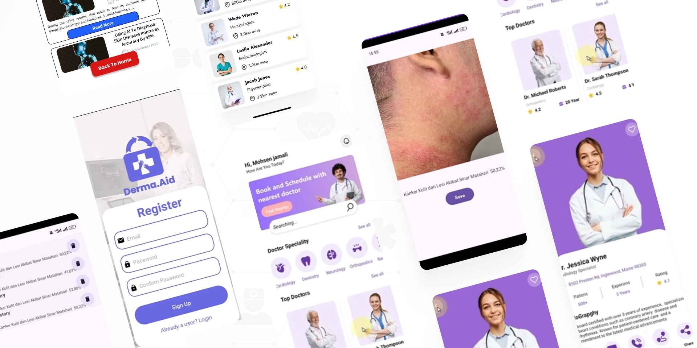
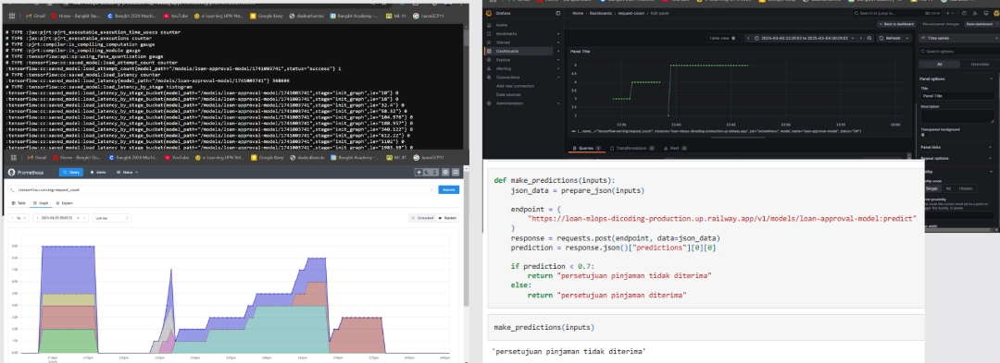
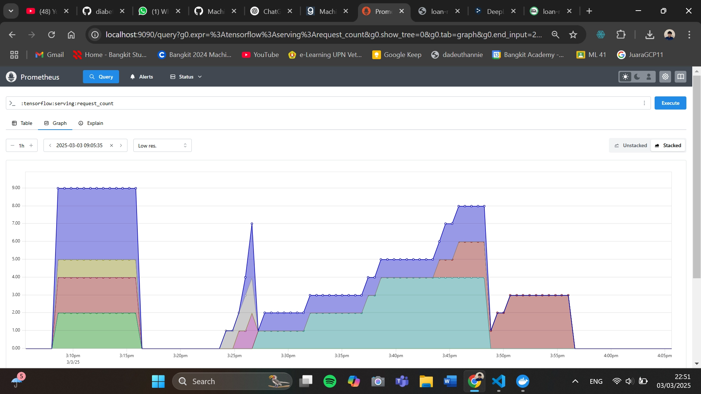
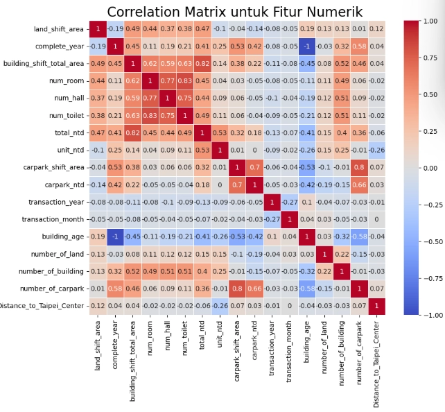
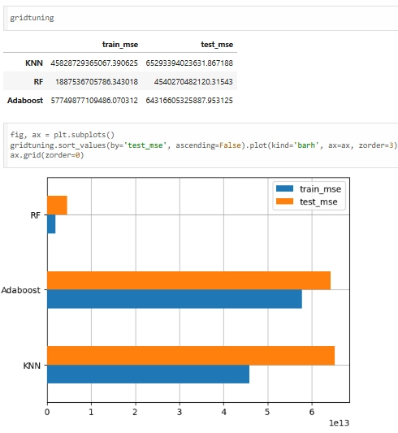
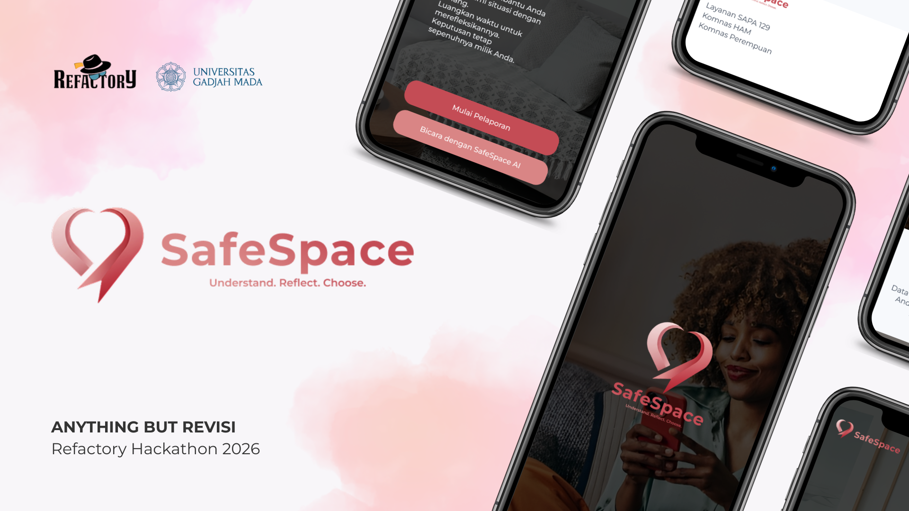
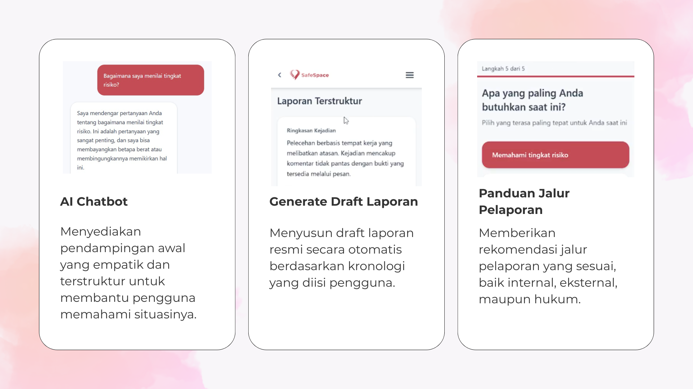
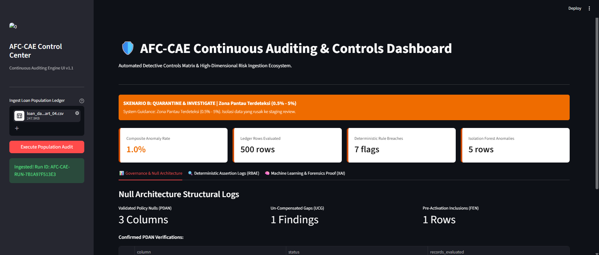
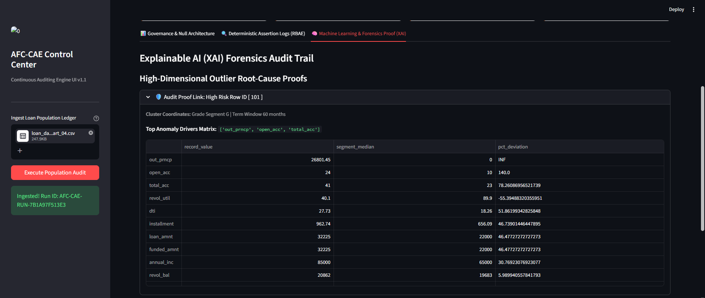

I'm Akbar,
I'm a Machine
Learning Engineer
Learning Engineer
Dedicated to building Machine Learning or AI Solutions to the final stage, by combining Cloud Solutions into every deployed system.
About Me
Informatics graduate specializing in Machine Learning and Deep Learning, backed by training from Bangkit Academy and AWS re/Start. Proficient in Python, TensorFlow, PyTorch, front-end integration, and cloud architectures.
Certified via DCML (TensorFlow) and Associate Data Scientist (BNSP). Expert in building scalable end-to-end ML pipelines from modeling to cloud deployment. Ready to deliver immediate value as a Data Scientist or ML Engineer.
Machine Learning Deep Learning MLOps Cloud Architecture
Education
-
Bachelor of Computer ScienceUniversitas Pembangunan Nasional Veteran Yogyakarta2022 – 2026GPA: 3.78 / 4.00Thesis: Minority Class Optimization in Skin Disease Classification Using AC-WGAN with Gradient Penalty-Based Data Augmentation
-
Bangkit Academy led by Google, GoTo, & TravelokaMachine Learning Cohort — Batch 2 2024Sep 2024 – Dec 2024
- Selected as one of 4,636 participants from a highly competitive pool of 45,000+ applicants across 400 Indonesian universities. Completed a rigorous incubator program focused on advanced technical competencies, soft skills, and professional English to accelerate career readiness in the technology sector.
- Graduated from the Machine Learning path with an outstanding final average score of 94.02/100. Mastered comprehensive technical competencies across 12 modules, including deep learning, Generative Adversarial Networks (GANs), data analysis, and TensorFlow deployment.
- Launched the "derma.aid" skin disease prediction capstone as Team Lead and Machine Learning Engineer. Boosted model accuracy by 16% by implementing a pre-trained ResNet50 model, applying L1/L2 regularization, and optimizing the dataset with distinct, separated data augmentation transformations.
- Developed a Vendor Portal automating invoice submission and payment request workflows, eliminating manual bottlenecks and data loss risks.
- Built Shopee API & ERP integration middleware that automatically extracts and maps e-commerce data into corporate ERP, removing manual data handling.
- Applied Spec-Driven Development and AI-assisted coding (OpenCode) to accelerate feature delivery and maintain cross-team architectural alignment.
Sertifikasi, Training & Skills

Derma.Aid
The Derma.Aid project was created to address the gap in skin healthcare in Indonesia, especially in remote areas like Sumba, NTT, which have very limited access to dermatologists. Skin diseases rank as the third most common illness in the country, yet there is an uneven distribution of specialists. To tackle these challenges, we developed Derma.Aid, an AI-based teledermatology application that provides fast, secure, and private early diagnoses.
As the Machine Learning Engineer, my primary responsibility was building the skin disease detection model. The model was built using TensorFlow and transfer learning with the ResNet50 architecture. We balanced the dataset to 4,000 images per class using oversampling/undersampling techniques and trained it on Google Colab using a T4 GPU. The optimized model achieved 86% accuracy on validation data and was saved in both .keras and .tflite formats for cloud and mobile deployment.
MLOps Loan Approval
This project automates the loan approval process by building a scalable, automated machine learning pipeline to predict applicant eligibility based on data fields like income and credit history. Built using TensorFlow Extended (TFX) and integrated with TensorFlow Transform (TFT), the system automates the entire lifecycle from robust feature engineering to automated data validation, addressing the critical real-world need for production-grade maintainability in financial context deployment.
The architecture features a Keras-based deep learning model optimized via Keras Tuner, achieving an 82.9% binary accuracy and an AUC score of 0.812. The final containerized pipeline is served via TF-Serving with Docker and deployed to the cloud on the Railway platform. To ensure long-term stability and system reliability, a continuous observability monitoring stack was established using Prometheus and Grafana to visualize real-time performance metrics.




Real Estate Price Prediction
This project focuses on building an accurate end-to-end regression system to predict real estate prices, providing critical data-driven insights for agents and stakeholders to set competitive market prices. The workflow initiated with comprehensive Exploratory Data Analysis (EDA), robust data cleaning, and advanced correlation methods—such as Spearman analysis—to evaluate feature relationships and clean outliers before modeling.
To find the most optimal algorithm, a systematic evaluation was conducted across four distinct models: K-Nearest Neighbors, Random Forest, AdaBoost, and Gradient Boosting. The core breakthrough involved intensive hyperparameter tuning on the Gradient Boosting model. This careful optimization minimized prediction error, successfully reducing the Mean Absolute Error (MAE) to under 10% to ensure high reliability for deployment.
SafeSpace
Engineered as part of the Refactory Hackathon, SafeSpace features a highly scalable backend built with FastAPI, PostgreSQL, and asynchronous SQLAlchemy. Developed using a strict Spec-Driven Development methodology with OpenSpec to design robust architectural alignment, the entire containerized application was successfully deployed into a Kubernetes cluster via Docker to ensure high availability and efficient infrastructure orchestration.
The platform spearheaded the integration of Gemini LLM (Google Generative AI) to architect an automated reporting API that intelligently processes incident logs into formal complaint forms. Adhering to a strictly privacy-first architecture, the system implements anonymous session management utilizing UUID4 identifiers alongside strict data lifecycle enforcement—such as cascade and hard-delete mechanisms—guaranteeing permanent removal of sensitive user data.




AFC-CAE Engine
The Anti-Financial Crime - Continuous Audit & Evaluation (AFC-CAE) Engine is an enterprise-grade automated compliance system engineered to detect financial anomalies and streamline regulatory auditing. Built with a high-performance backend using FastAPI and structured through a secure, containerized architecture via Docker, the engine processes massive multi-part loan and transaction datasets, providing financial institutions with instant evaluation capabilities against fraud and policy drifts.
The core intelligence features an advanced ML layer integrating an Isolation Forest algorithm for unsupervised anomaly detection, combined with an XAI (Explainable AI) Explainer to ensure transparency and compliance validation. Data integrity is guaranteed via a strict Ingestion Layer utilizing a custom Schema Validator and Dtype Gate, while the specialized audit modules run deterministic compliance assertions to block high-risk activities before downstream orchestration.